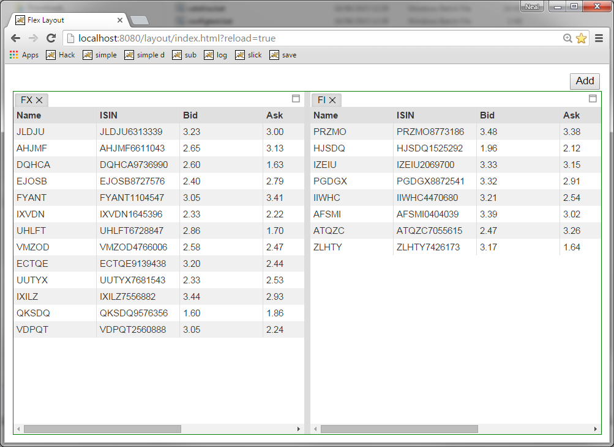
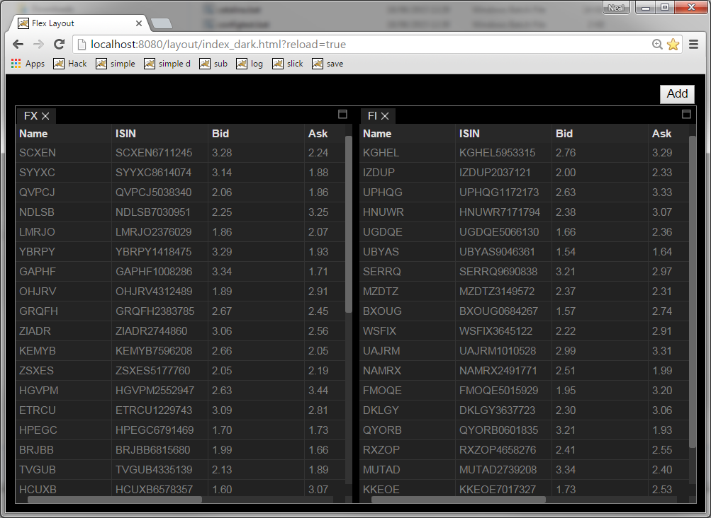
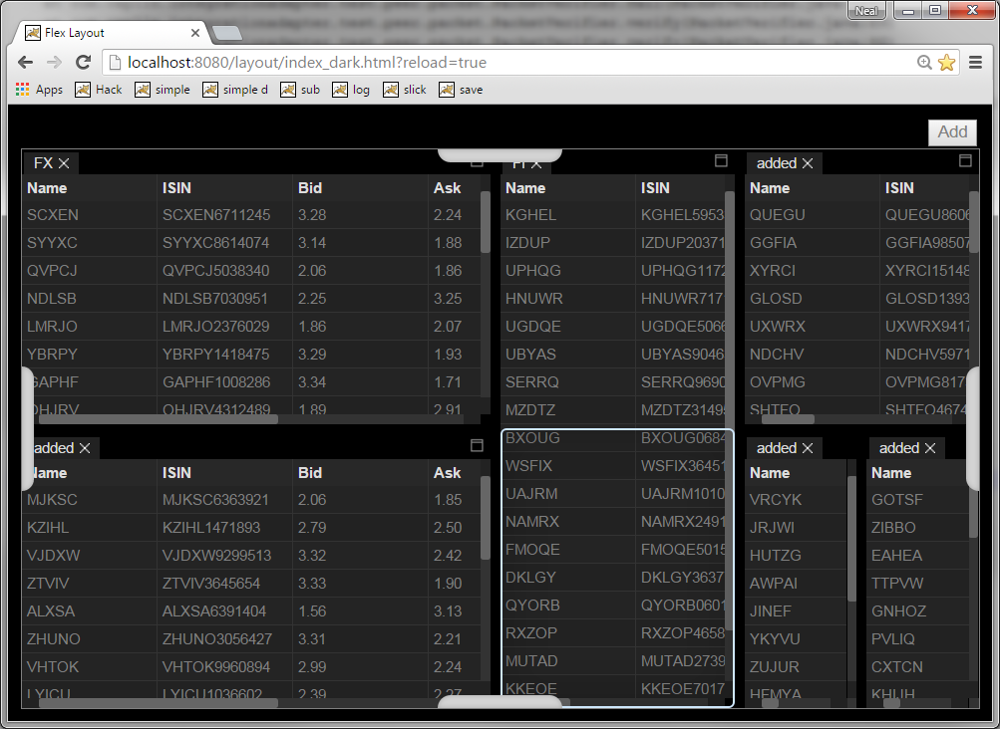
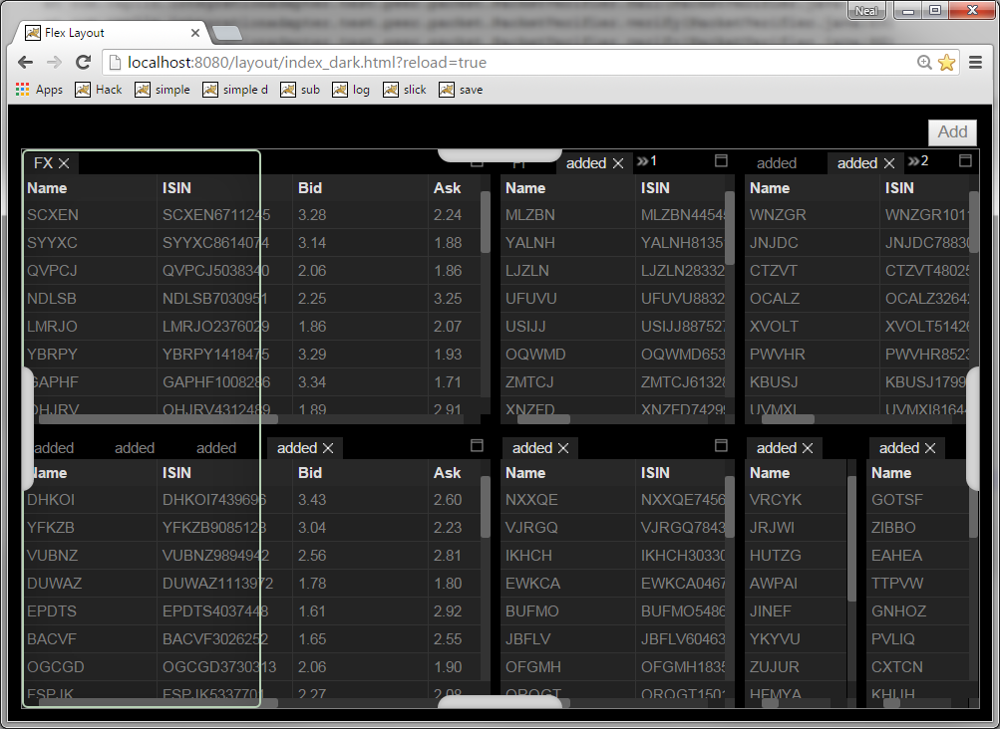
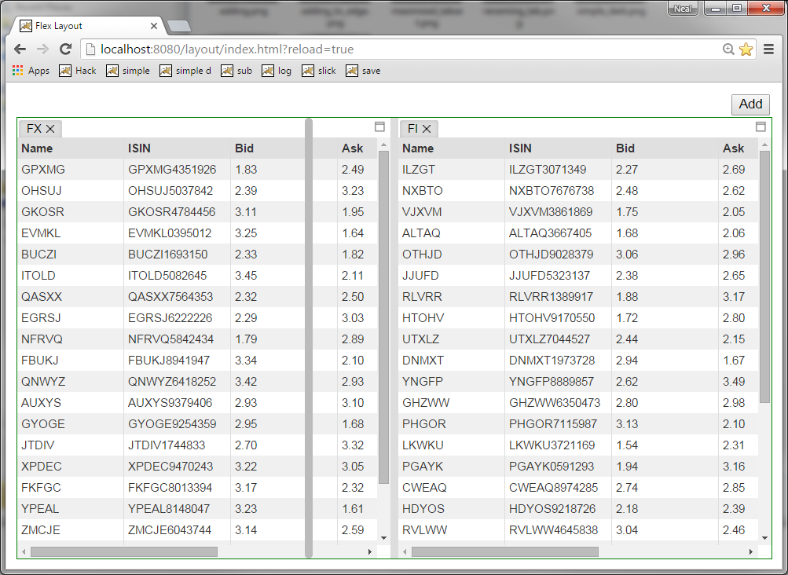
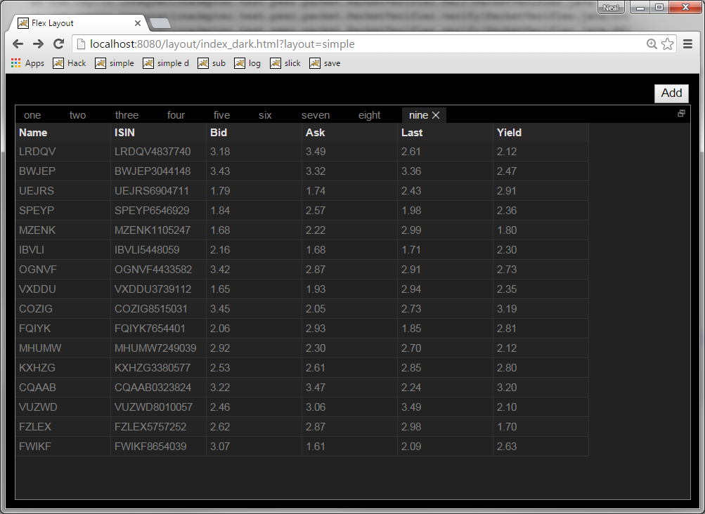
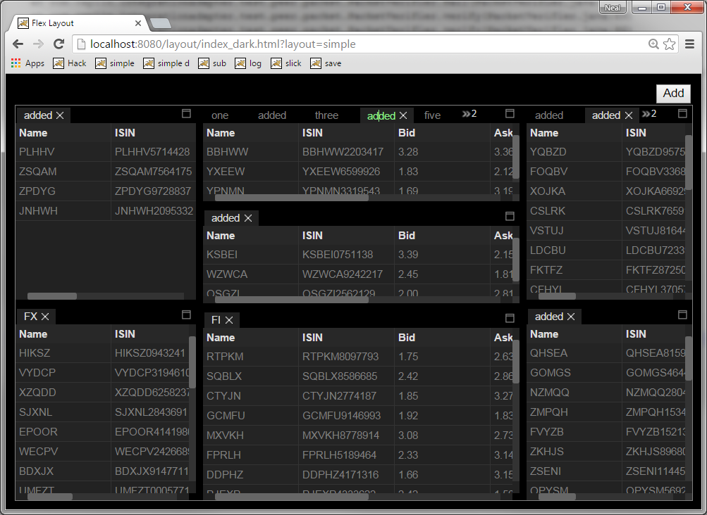
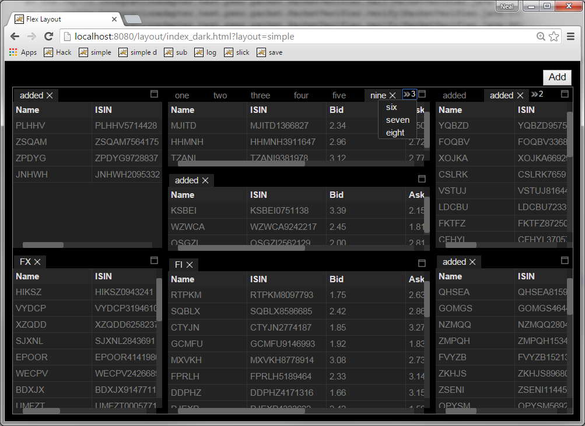
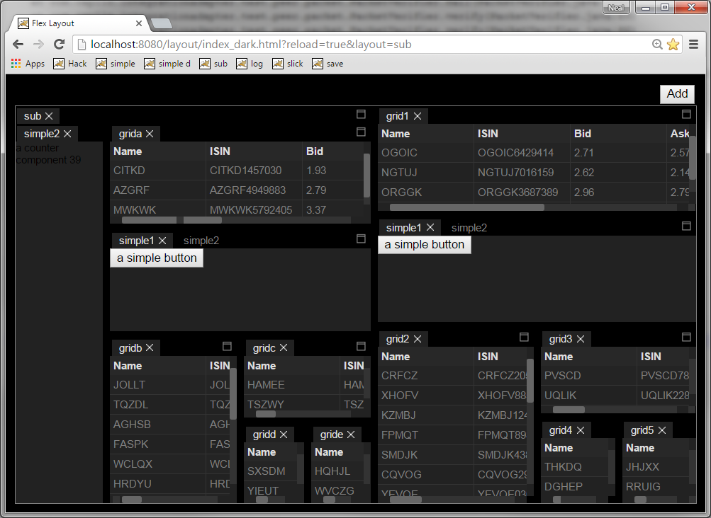
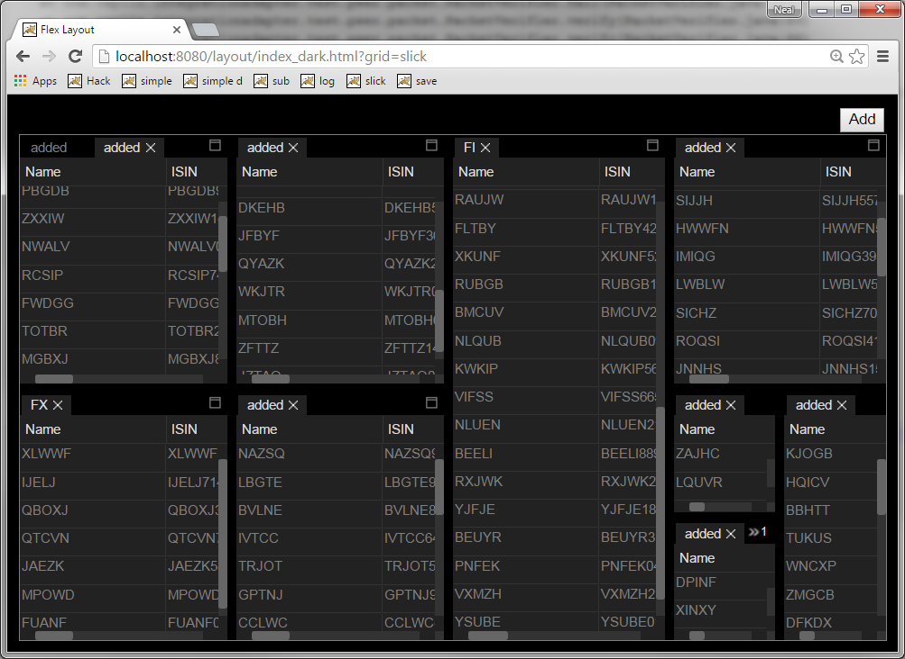

Light Theme

Dark Theme

Adding a tab by dragging

Adding to the edge

Dragging a splitter

Maximize a tabset

Renaming a tab

Tab overflow menu

Using a flexlayout inside a flexlayout

Using Slickgrid in tabs
